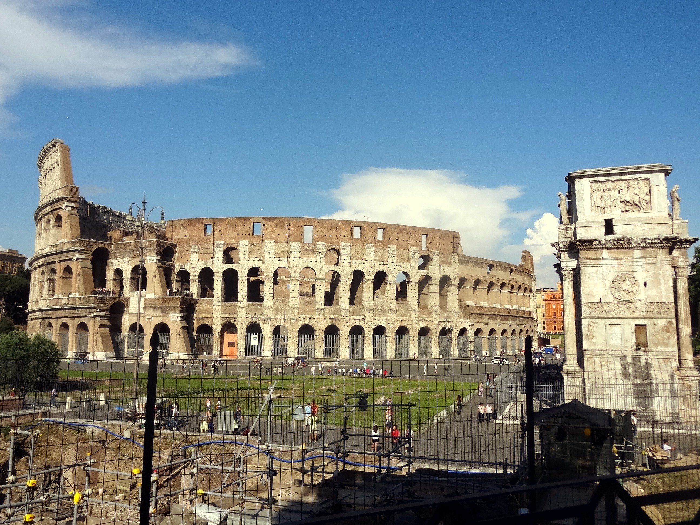
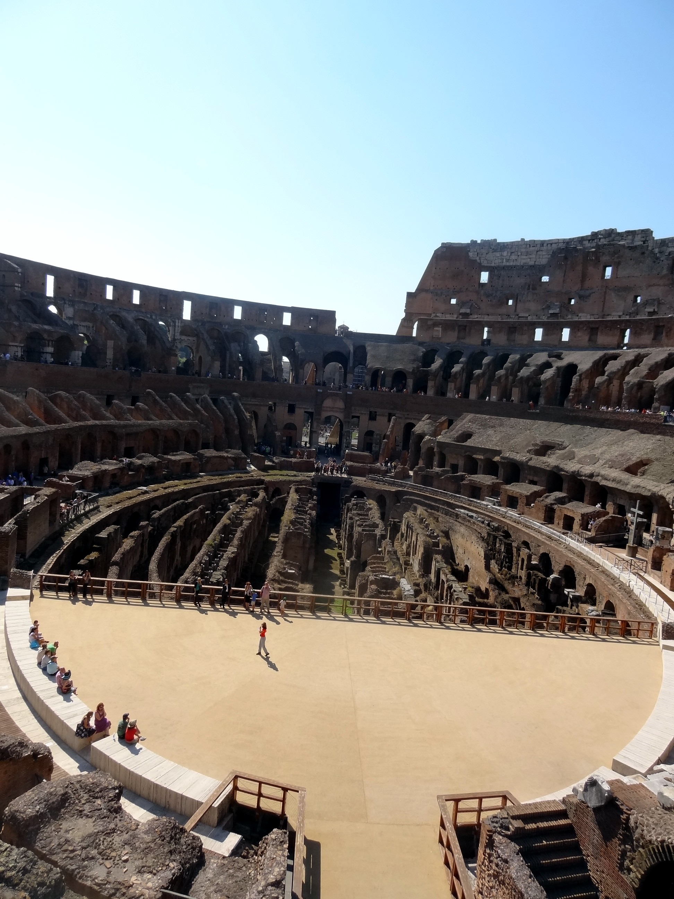
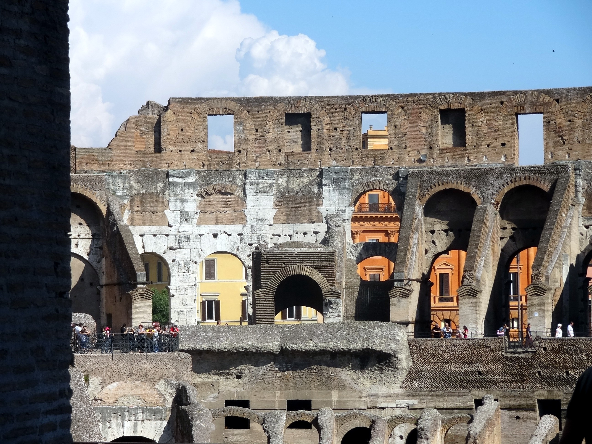
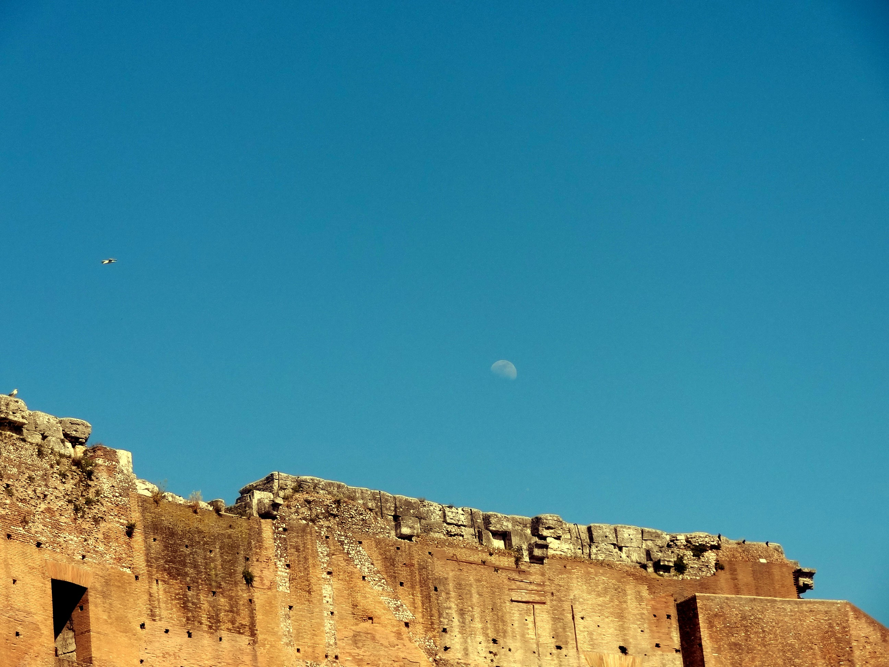
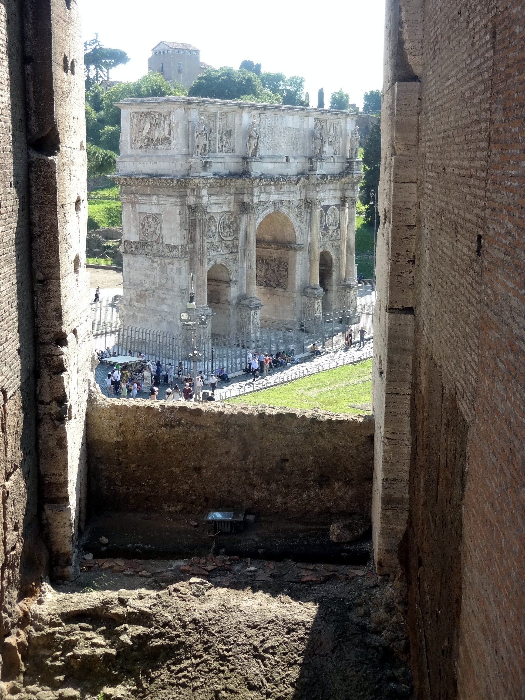
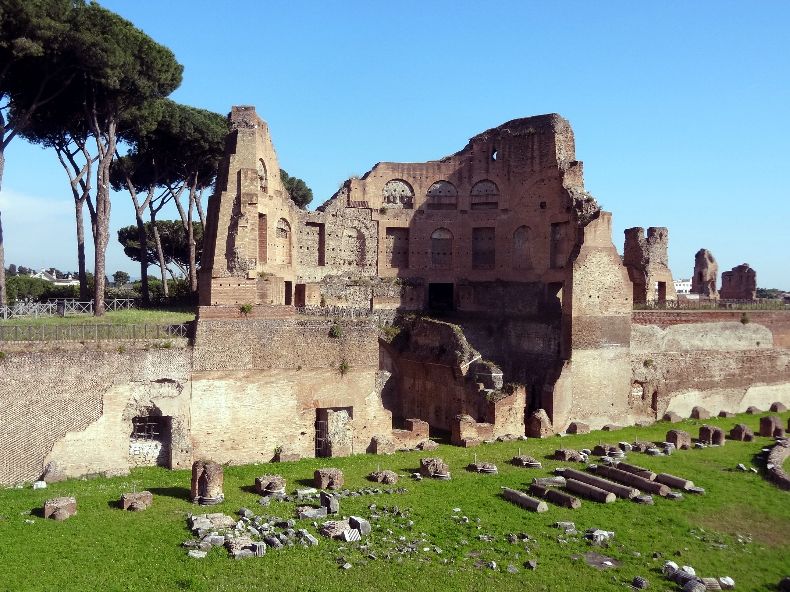
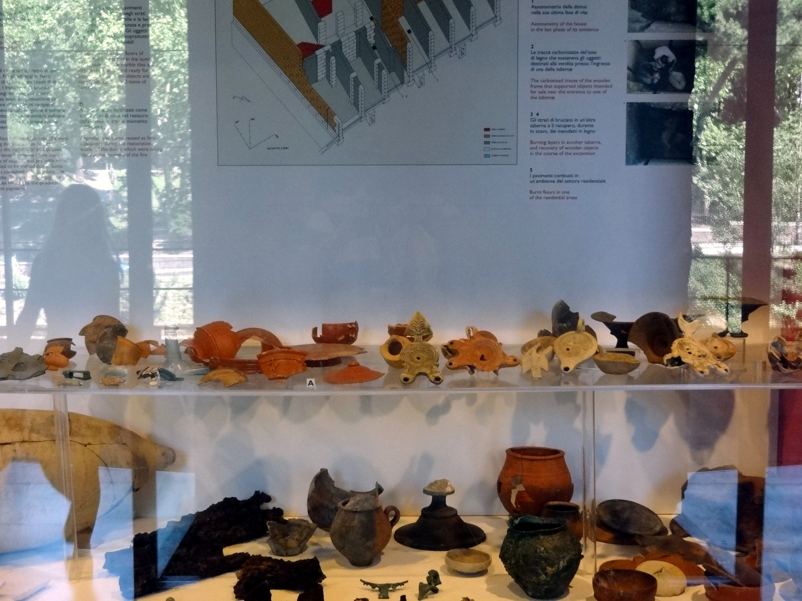
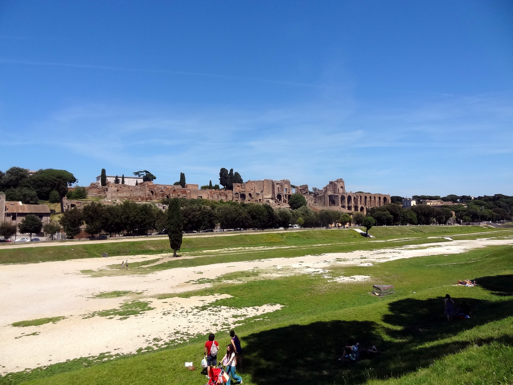
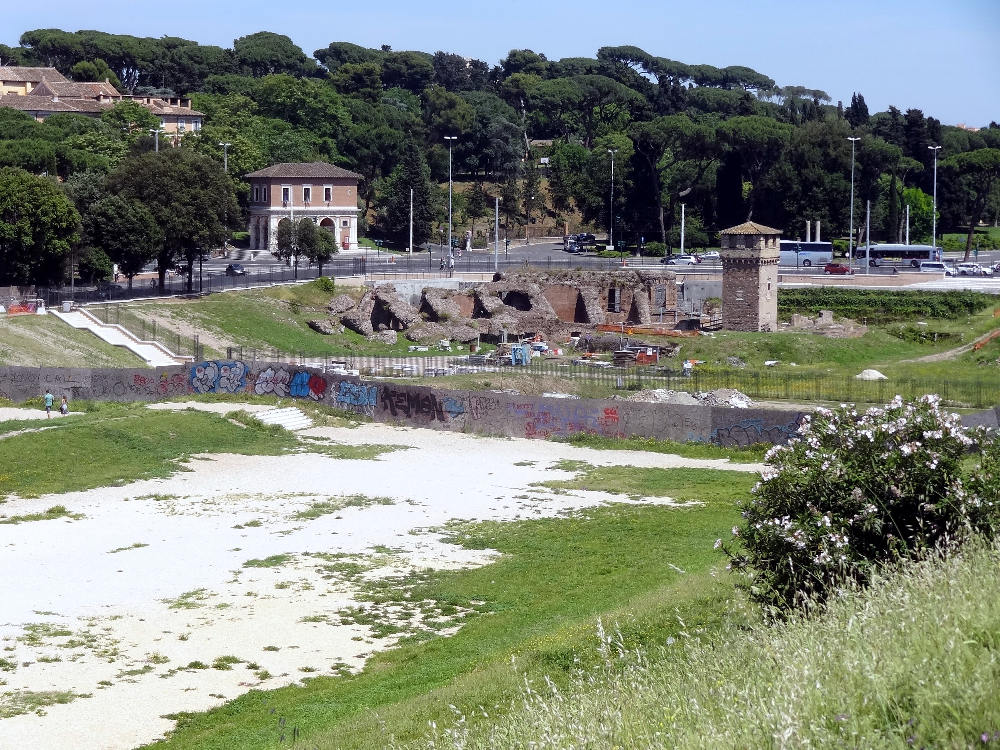

|
 |
| The Colosseum was built in 8 years. Today it would take 25. The marble exterior and seating was looted (or in modern terminology, repurposed). What we see here is infrastructure. The Arch of Constantine (right) was built in 315, make it the newest of the Roman arches. The Colosseum seated 87,000 people according to contemporary estimates, although today that has been revised down to 50,000. There were box seats on the North and South sides for the Emperor and the Vestal Virgins. Senators had their names carved behind their seats. |
|
 |
| Again, infrastructure. We're looking
into basement rooms that were used to house props and animals. I had an
immediate sense of deja vu that I'd been here before, and that it was a
fun place. Besides losing June Jackson's t-shirt and my glasses case, the most dumbass thing I did concerning the trip was to book a Colosseum tour for the day before I arrived. Got a self-guided tour, but it was awful. And unnecessary--the Colosseum is full of explanatory plaques. |
|
 |
| Old and new. Who would not want to paint something like this? |
|
 |
| Gull and moon |
|
 |
| Arch of Constantine as seen from the inside. |
|
 |
| Remains of the Forum on Palatine Hill
opposite the Colosseum. Palatine is where the she-wolf reared Romulus
and Remus. It's been inhabited since 1000BC. The floor of the Temple of
Saturn and the house of the Vestal Virgins are here, although you can't
get close to them. There are also "Romulan huts" which didn't
look specifically Romulan to my contemporary eye. |
|
 |
| Palatine was the Park
Place, the Beverly Hills of its day. These pots and decorative artifacts
were in art stores there, and survived the Great Fire of 64, which was
actually three set fires, originated nearby, and burned down
75% of the city at enormous loss of life.
Romans blamed the fire on Nero, because immediately treated the wreckage
as a blank canvas for
self-aggrandizing new buildings. Nero blamed it on Christians, who
according to Tacitus showed that Rome is "where all things hideous and
shameful from every part of the world find their centre and become
popular". Nothing indicates that Christians were ever killed in the
Colosseum. In the 1400s, the Pope dedicated the Colosseum to the
martyers, and the idea that Christians were fed to lions in the Coloseum
became popular in the 1700s. |
|
|
|
  |
| Chariot drag strip at the Circus Maximus. The buildings at the rear are part of the Paletine complex. The ruins at the right are all that remain (the lone and level drag strip stretches far away.) |